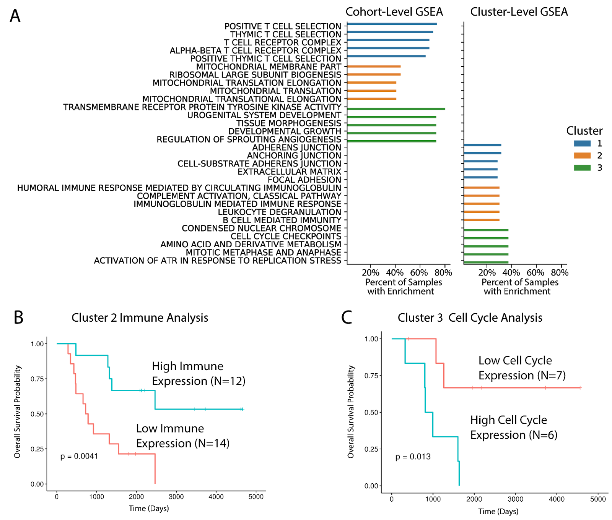

Jacob Pfeil1,2*, Lauren M. Sanders1,2,3, Ioannis Anastopoulos1,2 A. Geoffrey Lyle2,3 Alana S. Weinstein1,2 Yuanqing Xue1,2 Andrew Blair1,2 Holly C. Beale2,3 Alex Lee4 Stanley G. Leung4 Phuong T. Dinh4 Avanthi Tayi Shah4 Marcus R. Breese4 W. Patrick Devine5 Isabel Bjork2 Sofie R. Salama1,2,6 E. Alejandro Sweet-Cordero4 David Haussler1,2,6 Olena Morozova Vaske2,3
1 Department of Biomolecular Engineering, University of California, Santa Cruz, California, United States of America
2 Genomics Institute, University of California, Santa Cruz, California, United States of America
3 Department of Molecular, Cell and Developmental Biology, University of California, Santa Cruz, California, United States of America
4 Department of Pediatrics, Division of Hematology and Oncology, University of California, San Francisco, California, United States of America
5 Department of Anatomic Pathology, University of California, San Francisco, California, United States of America
6 Howard Hughes Medical Institute, University of California, Santa Cruz, California, United States of America
* Corresponding author: jpfeil@ucsc.edu
Precision oncology has primarily relied on coding mutation status as a readout to define potential therapeutic benefit. Incorporation of transcriptome analysis into precision oncology workflows has proven to be challenging, as relative rather than absolute gene expression level needs to be considered, requiring differential expression analysis across samples. However, cell-of-origin and tumor microenvironment effects limit the effectiveness of these approaches. To address these challenges, we developed an unsupervised clustering approach for discovering differential pathway expression within cancer cohorts using gene expression measurements. The hydra approach models differential expression as a multimodal distribution and uses a Dirichlet Process Mixture Model to automatically infer the number of clusters from the data. Multivariate clustering of multimodally expressed genes reveals tumor expression subtypes. We demonstrate that the hydra approach is more sensitive than widely-used gene set enrichment approaches for detecting multimodal expression signatures. We applied the hydra analysis framework to high-risk neuroblastoma and a cohort of small round blue cell tumors. We discovered expression signatures associated with changes in the tumor microenvironment. These expression signatures were consistent with pathology review of the H&E slide images. Furthermore, we identified an association between ATRX deletions and elevated immune marker expression in high-risk neuroblastoma samples. The hydra software is available as a Docker container for easy deployment (https://hub.docker.com/r/jpfeil/hydra). The source code is available on GitHub (www.github.com/jpfeil/hydra).
Pediatric cancers tend to have a small number of somatic mutations. To increase the number of actionable leads, precision pediatric oncology initiatives also analyze tumor gene expression patterns. Currently available approaches for clinical gene expression data often use arbitrary thresholds for assessing over-expression and assume gene expression is normally distributed. We show that important gene expression signatures across small round blue cell tumors are not normally distributed and are better modeled as a mixture of normal distributions. We found significant differences in the expression of proliferative signaling, extra-cellular matrix organization, and immune signaling pathways. Expression signatures correlated with differences in patient outcomes in three disease for which we had patient outcome data. The low mutation rate in pediatric cancers have led some to suggest that pediatric cancers are less immunogenic, but our analysis suggests that similar immune activation signals can be identified across pediatric cancers, so further research into pediatric tumor immunology may reveal opportunities for powerful immunotherapies.
Large cancer sequencing projects, including The Cancer Genome Atlas (TCGA) and Therapeutically Applicable Research to Generate Effective Treatments (TARGET), have facilitated the development of cancer gene expression compendia but these compendia often lack corresponding normal tissue expression data. Without the the normal comparator, Hoadley et al. (2018) found that cell-of-origin signals drive integrative clustering of TCGA data, with the exception of tumors that have high immune and stromal expression clustering irrespective of the cell-of-origin. Strong cell-of-origin and tumor microenvironment (TME) signals may complicate the interpretation of gene expression results for precision oncology applications, so careful modeling of the data is necessary to infer accurate conclusions from the data.
The TME includes tumor cells, stromal fibroblasts, infiltrating immune cells, and vasculature . Similarities in TME composition across tumor samples have led to the identification of TME states (i.e. inflamed, immune-excluded, immune-desert). These states are dynamic and may change as the tumor progresses, but may shed light on the immunogenicity of tumor cells and correlate with response to cancer immunotherapies . The TME cellular composition can be inferred from gene expression data since host cell RNA is sequenced along with the cancer cell RNA. Not accounting for the immune signal when performing gene expression analysis may confound the interpretation of clustering results .
Tumor progression and response to therapies is associated with features of the TME, so targeting the TME therapeutically may improve the treatment of some cancers. Immunotherapies that activate the host immune system to eradicate tumors have improved the treatment of several cancer types . Pediatric cancers are thought to be less immunogenic because pediatric cancers have lower mutation burdens in general. Gene overexpression is another source of tumor-specific antigens which may play an important role in pediatric tumor immunogenicity. In addition to infiltrating immune cells, cancer-associated fibroblasts assist in extracellular matrix remodeling and activation of growth factor signaling that facilitate tumor growth, metastasis, and resistance to therapies. Methods are needed to both infer and characterize gene expression subtypes that correlate with tumor microenvironment states to accelerate the development of novel therapies for pediatric cancers.
Tumor/normal differential expression analysis in which a cohort of tumor tissues is compared to normal counterparts is an effective approach for identifying gene expression biomarkers , but it is often not possible to conduct this analysis in a clinical setting. Sufficient biological and technical replicates are limited by tumor tissue availability, and healthy neighboring tissue often cannot be isolated. In addition, for many pediatric cancers, the cell-of-origin and thus the appropriate reference normal tissue is not known. Besides differential expression analysis, single-sample pathway analysis can be used to identify upregulation of biological gene sets in tumor subtypes. The most widely used pathway analysis approach is gene set enrichment analysis (GSEA). GSEA identifies coordinated expression of pathway genes using gene ranks and a Kolmogorov-Smirnov-like test statistic . GSEA is usually performed on differentially expressed genes, but single-sample versions exist for identifying cancer subtypes. GSEA uses curated pathway gene sets like those in the Molecular Signatures Database (MSigDB) .
Cancer gene expression subtypes are traditionally identified using unsupervised clustering analysis such as consensus clustering analysis . These methods are generally underpowered because the number of genes greatly exceeds the number of samples. Dimensionality reduction approaches such as Principal Component Analysis (PCA) have been found to underestimate the dimensionality of gene expression data. Lenz at al. (2016) found two cases in which PCA fails to identify a biological signal: when the size of the cluster is small and when the effect size is small. Lenz et al. (2016) suggest investigating multimodally expressed genes to improve identification of subtypes. Cancer subtypes naturally lead to multimodal expression patterns where each subtype expresses genes with distinct levels and correlation patterns. Furthermore, enriching for multimodally expressed genes before clustering has been shown to improve correlations with clinical features of interest .
Gaussian mixture models are a powerful class of unsupervised clustering algorithms for detecting multimodally expressed genes . A Gaussian mixture model is appropriate when the expression data can be modeled by two or more Gaussian distributions . One limitation of Gaussian mixture models in this context is that the number of clusters in the data is often not known beforehand, so a parameter search is used to identify the best-performing model. However, this is a computationally expensive approach. This problem can be overcome by placing a Dirichlet process prior on the number of expression clusters. The number of clusters is then inferred while fitting the mixture model using Markov chain Monte Carlo sampling . This approach has not been widely used in clinical cancer research because these algorithms are computationally intensive, but recent advances in approximate sampling methods make this approach scalable for precision oncology applications .
Here, we describe the hydra approach for identifying clinically relevant expression subtypes and classifying N-of-1 tumor samples. We provide an overview of the hydra framework, assess performance for detecting differential pathway expression, and apply the approach to better understand expression patterns in high-risk neuroblastoma and other small round blue cell tumors. We applied the learned models trained on publically available cancer gene expression data to the N-of-1 setting and show that this framework can identify distinct immune and stromal expression signatures that differentiate pediatric cancer samples. Finally, we discover recurrent tumor microenvironment signatures across pediatric cancer types.
Traditional parametric models, like the finite mixture model, use a fixed number of parameters (i.e. number of clusters). Over- or underfitting can occur when the parametric model does not reflect the underlying data . Unlike the finite mixture model, the Dirichlet process mixture model (DPMM) represents a theoretically infinite number of clusters and can adapt the number of clusters based on prior belief and the data .
The Dirichlet process is an infinite dimensional extension of the Dirichlet distribution and is commonly used as a prior distribution for infinite mixture models . The Dirichlet process has two parameters: the concentration parameter α and centering distribution H. The concentration parameter α controls the extent to which samples from the DP resemble the centering distribution H. We model gene expression as a multivariate Gaussian distribution, so our centering distribution is a normal-Wishart distribution 𝒩𝒲0.
We briefly describe the stick-breaking construction of the Dirichlet process G ∼ DP(α, H) . Consider a stick of unit length. To generate an infinite number of mixing weights πk for the DP, we sample breakpoints ν ∈ [0, 1] from a Beta distribution and break the remainder of the stick at ν. Since a finite number of clusters is sufficient for modeling gene expression data and in practice the mixing weighs quickly approach zero, the Dirichlet process is truncated to the number of clusters K, which was shown to accurately approximate the infinite posterior for large K .
$$\begin{gathered}
\label{eq:dp}
\nu \sim \text{Beta}(1, \alpha) \\
\pi_k = \nu_k \prod_{l=1}^{k-1}(1 - \nu_l)\end{gathered}$$
Once we have the mixing components, we want to sample parameters from the centering distribution H weighted by pik. If we consider a probability space Θ where θk* ∈ Θ, then H is a measure on the partitions of Θ. For our application, we will partition the parameter space Θ into finite, measurable partitions B1, B2, ..., Bk.
$$\begin{gathered}
\theta_k^{*} \sim H \\
G = \sum_{k=1}^{\infty} \pi_k \delta_{\theta_k^{*}} \\
(G(B_1), G(B_2), ..., G(B_k)) \sim \text{Dir}(\alpha H(B_1), \alpha H(B_2), ..., \alpha H(B_k)) \end{gathered}$$
This construction generates the marginal of the Dirichlet process, which follows a Dirichlet distribution. Samples from the marginal distribution are finite, discrete, and sum to 1 . Next, we outline how the DPMM groups gene expression samples under cluster-specific parameters μzi and Σzi where zi ∈ 1, 2, ..., K is the cluster index.
$$\begin{gathered}
\label{eq:mm}
x_i | \mu_{z_i}, \Sigma_{z_i} \sim \mathcal{N}(\mu_{z_i}, \Sigma_{z_i}) \\
z_i | \pi \sim \text{Categorical}(\pi_1, \pi_2, ..., \pi_k) \\
\mu_{z_i}, \Sigma_{z_i} | G \sim G \\
G | \alpha, \mathcal{NW}_0 \sim DP(\alpha, \mathcal{NW}_0)\end{gathered}$$
We found that standard inference algorithms like the Gibbs sampler over-estimate the number of clusters. For example, clusters containing a few samples would remain after the sampler converged, which could have been merged into a larger cluster. For this reason, we incorporated the BNPy memoized online variational inference algorithm (moVB) into our analysis framework. The moVB algorithm uses variational inference and interleaves birth, merge, and delete moves, which was shown to generate reliable clustering results by avoiding local optima and removing redundant clusters .
We developed a Bayesian non-parametric clustering framework for identifying biological and technical variation in large cancer gene expression datasets without the need for a reference normal dataset. To our knowledge, this is the first reproducible and widely deployable implementation of a non-parametric mixture model framework designed to overcome the challenges of precision oncology gene expression analysis. The hydra pipeline is an open source software tool hosted on GitHub (www.github.com/jpfeil/hydra). A Docker container is available for deployment across environments (www.dockerhub.com/jpfeil/hydra).
The hydra framework contains three command-line tools: filter, enrich, and sweep (Fig. [overview]). The filter command is run first to isolate the multimodally expressed genes. Then, the user can subset these genes to pathways of interest using the enrich and sweep methods before performing multivariate clustering across genes to identify clusters of samples. The underlying analysis routines can be accessed within the docker using Jupyter notebooks. The tools to perform this analysis are contained within the docker.
The filter command takes an expression matrix and filters down to the multimodally expressed genes using the Dirichlet Process Gaussian Mixture Model described above. This creates a directory of multimodally expressed gene models which can be used to predict differential expression in new samples. Multimodal feature selection has been shown to improve clustering performance, and the resulting clustering correlates better with clinical features , but there has been limited use of these methods in the pediatric precision medicine community .
The enrich and sweep routines are two independent analyses to explore multimodal expression in pediatric cancer gene expression cohorts. Both look for expression variation within a specific disease context without a matched normal comparator, which is a new analysis framework for the pediatric cancer research community. We found that multimodally expressed genes that participate in a biological pathway tend to have correlated expression distributions. This insight facilitates the detection of expression subtypes by reducing the number of genes in the clustering analysis. The hydra software comes prepackaged with popular gene sets, including the Molecular Signatures Database (MSigDB) , the Gene Ontology terms , and the EnrichmentMap gene sets . The gene set database is configurable, so additional gene sets can be added at runtime.
The enrich command uses a hypergeometric test to discover enrichment of multimodally expressed genes within a user-defined database of gene-sets. The enrich method is used to generate new hypotheses that accelerate pediatric cancer research. The minimum component probability is an important parameter when applying the enrich command. The minimum component probability is an additional filter to remove multimodally expressed genes that influence a small subset of tumor samples. This parameter gives the user the ability subset the genes to those that influence a greater number of patients. We implemented the scan sub-routine to explore minimum component thresholds. The scan routine can be used to tune the analysis with respect to the constraints of the available data, which is an important factor in pediatric cancer research since data is often difficult to obtain. We recommend setting this threshold such that the number of genes is less than the number of samples — the multivariate normal distribution becomes unstable when there are more genes than samples.
The sweep routine investigates multivariate multimodal expression signatures within a user-specific gene-set. For each gene-set, a multivariate DP-GMM is applied to determine if more than one cluster is present within the gene-set. This approach is useful when curated gene sets are available for the disease of interest, but manual inspection of each gene-set is not feasible. The sweep command can be used to identify the gene-sets with the greatest power for differentiating tumor samples. Often, gene-expression signatures are not known for a disease, which requires a more unsupervised analysis, so we recommend using the enrich command. However, the sweep command is useful when integrating known signatures that may translate to the disease of interest.
We have also implemented routines for cluster profiling and N-of-1 tumor analysis. These rountines are accessible within the docker container using Jupyter notebooks. Cluster profiling analysis includes GSEA to identify pathway expression that characterizes each cluster. GSEA uses all available genes since these methods require non-differentially expressed genes to assess the significance of an enrichment score. A t-statistic is calculated for each gene comparing gene expression values of samples within and outside of a cluster. Cluster profiling GSEA uses the ranked gene-level t-statistics to determine gene set enrichment.
The N-of-1 tumor analysis routine classifies a new gene expression profile into one of the inferred clusters, calculates a gene-level z-score for that sample relative to the normalized expression distribution, and performs GSEA. This procedure can identify new gene expression signatures that may not be detectable using the entire expression cohort as a background reference distribution. This approach is another novel contribution to the field and may facilitate the identification of clinically relative signatures that are being overlooked in current gene expression analyses.
We tested the hydra framework’s ability to detect differential pathway expression using synthetic cancer data. We compared hydra to two widely used gene set enrichment tools: single-sample gene set enrichment analysis (ssGSEA) and gene set variation analysis (GSVA) . Both methods are implemented in the GSVA R package . We modeled cancer gene expression as a multivariate Gaussian distribution. We used the TCGA glioblastoma multiforme cohort (n=166) to model a background mean and covariance matrix. This approach allowed us to model pediatric cancer gene expression data while also controlling for subtype-related expression variation. We downloaded the RSEM-quantified TPM normalized gene expression measurements from the UCSC Xena Browser . We focus our analysis on normalized gene expression data because this data is more-widely used in the cancer research community and fewer methods are available to analysis normalized counts. To reduce heteroscedasticity and the effect of outlier expression levels, we transformed the expression data to log2(TPM + 1) .
We defined an expression subtype as a subset of samples with a distinct expression mean and correlation structure compared to other samples within the disease cohort. To assess the performance of the hydra approach, we generated 320 synthetic data sets each containing 300 observations. To avoid biases in the synthetic data generation process, we used random sampling to select MSigDB gene sets for each subtype, the size of the subtype Uniform(0.15, 0.4), and the correlation structure within the subtype. We randomly generated the covariance matrix for the cancer subtype expression data, but used the underlying covariance matrix of the TCGA glioblastoma multiforme dataset for the background samples. We tested the effect of having 10% and 25% of genes within a gene set being differentially expressed (%DEG). In addition to these parameters, we tested a range of effect sizes: 0.25 (least different), 0.5, 0.75, 1.0, 1.5, 2.0, 2.5, and 3.0 (most different). This process was repeated twice for each gene set to create synthetic training and test data, which were then analyzed with the hydra framework using the hydra sweep command (Fig [overview]). The mean expression filter removed any genes with a mean expression of fewer than 1.0 log2(TPM + 1). This avoids lowly-expressed genes that may have unstable expression measurements. The prior on the hydra covariance matrix was the identity scaled by 2.0, and the prior on the number of clusters was set to 2. The activated expression cluster was set to the cluster with the largest L1 norm.
We downloaded pediatric cancer RNA-Seq data for neuroblastoma, osteosarcoma, Ewing sarcoma, alveolar rhabdomyosarcoma, and embryonal rhabdomyosaromca from the UCSC Treehouse Compendium (https://treehousegenomics.soe.ucsc.edu/public-data/). This data was analyzed using the same RNA-seq pipeline, so potential computational batch effects are avoided . Clinical data for the TARGET neuroblastoma and osteosarcoma samples were obtained from the TARGET Data Matrix (https://ocg.cancer.gov/programs/target/data-matrix). We also analyzed a set of 58 synovial sarcoma microarray profiles with matching metastasis rate data .
The neuroblastoma unsupervised enrichment analysis using the hydra enrich command included all genes with a mean expression greater than 1.0 log2(TPM + 1), a minor expression component probability of at least 20%, and a minimum effect size of 1.0. Our synthetic data analysis found that the signal decreases below an effect size of 1.0, so we use this parameter for all following analyses. We set a minimum mean threshold of 1.0 log2(TPM + 1) to exclude lowly expressed genes that may have unstable measurements. We used the hydra scan routine to search a range of minimum component probability thresholds and found 20% yielded the most number of clusters while keeping the number of genes (p = 42) below the samples (n = 70). Sample clusters were identified by applying multivariate clustering across the enriched GO term genes (FDR < 0.01). The multivariate mixture model α concentration parameter was set to 5.0; the prior on the covariance matrix was set to the identity scaled by 2.0. The prior parameter for the number of clusters was 5. We correlated hydra expression clusters with the results of the tumor microenvironment profiling tools xCell , CIBERSORT , and ESTIMATE . We also applied the consensus clustering method M3C and Gap statistic k-means method to the TARGET MYCN-NA neuroblastoma data. We tested a range of median absolute deviation (MAD) thresholds. The number of clusters was inferred to be the smallest statistically significant value.
We then compared the clustering patterns across small round blue cell tumors. We applied the TumorMap dimensionality reduction method to visualize clustering of the full small round blue cell tumor gene expression matrix. We then applied the hydra framework to explore expression variation within each disease. We applied the filter/enrich approach as the TARGET MYCN-NA neuroblastoma analysis. Each disease expression matrix had unique statistical properties including sample size and level of variation. This required us to adapt the minimum probability threshold for each disease data set using the scan routine. The Jupyter notebooks for exploring these data sets can be found on GitHub (github.com/jpfeil/hydra-paper/analysis). We clustered the top 10 enriched gene sets for each disease expression cluster to show similar expression subtypes across diseases.
A Kruskal-Wallis test was used to identify statistically significant differences across two or more groups, and a Mann-Whitney U test was used for pairwise tests using a Holm-Sidak correction for multiple hypothesis testing . We used the scipy stats implementation of the Kruskal-Wallis test and the scikit-learn post hoc processing implementation of pairwise Mann-Whitney U tests. Spearman rank and Pearson correlation values were calculated using the scipy library . Survival analysis was done using the survminer package .
Pediatric tumor samples were flash frozen, embedded in OCT, and 5um cryosections were collected. Slides were hematoxylin and eosin (H&E) stained and imaged on a Leica DMi8, equipped with a HC PL APO 40x/0.85 NA objective and DFC7000T camera. H&E slides were reviewed by a licensed pathologist for evidence of inflammation and graded as having either minimal (< 10%) or moderate inflammation (20-30%).
To assess how well hydra detects differentially expressed pathways as compared to common GSEA approaches, we applied these methods to synthetically-generated cancer gene expression data. We generated synthetic cancer gene expression data based on the TCGA glioblastoma multiforme and the MSigDB Hallmark gene sets. We tested a range of effect sizes and percent differentially expressed genes (%DEG) within the MSigDB gene sets. We generated receiver operator curves (ROC) and calculated the Area Under the receiver operator Curve (AUC) for each analysis. Overall, the hydra pipeline outperformed the single-sample GSEA approaches with a mean AUC of 0.93 (95% CI: 0.91 - 0.95). ssGSEA had a mean AUC of 0.72 (95% CI: 0.71 - 0.74) and GSVA had a mean AUC of 0.67 (95% CI: 0.66 - 0.68) (Fig [rocplot]A).
We further investigated the performance of these methods by plotting the AUC against the effect size at %DEG of 10 and 25% (Fig [rocplot]B). The hydra method performed better across all effect sizes, achieving near perfect performance above an effect size of 2.0 and 0.75 at %DEG of 10% and 25%, respectively. ssGSEA and GSVA performed similarly at low effect sizes, but ssGSEA performed better as the effect size increased. The ssGSEA and GSVA methods began to perform similarly to hydra at an effect size of 3.0 and %DEG of 25%. Overall, the hydra framework performed significantly better than the GSEA approaches, particularly at low effect sizes. Therefore, the hydra approach is better suited for subtyping within a disease cohort when the effect sizes are smaller and fewer genes are differentially expressed.
After completing the performance assessment with synthetic gene expression data, we applied the hydra unsupervised enrichment analysis to the TARGET high-risk neuroblastoma cohort. High-risk neuroblastoma is an aggressive disease and is resistant to intensive therapy. Further subtyping of high-risk neuroblastoma may identify novel therapeutic targets and improve risk stratification. We hypothesized that unsupervised clustering of Gene Ontology terms would identify expression subtypes of high-risk neuroblastoma tumors. TumorMap analysis showed that the MYCN-non-amplified (MYCN-NA) neuroblastoma samples clustered separately from MYCN-amplified (MYCN-A) and stage 4S neuroblastomas samples (). We focused on the MYCN-NA neuroblastoma tumor samples because this is the largest set of samples (N=70), and variation within MYCN-NA tumors is not well understood .
We applied the hydra unsupervised enrichment analysis to the MYCN-NA cohort. The multimodal expression filter identified 428 genes with a minor component probability greater than 20% (Supplementary Table 2). Gene Ontology analysis found enrichment for the following GO terms (FDR q < 0.01): adaptive immune response (24 genes), mesenchyme development (12 genes), steroid hormone secretion (4 genes), and response to corticosterone (4 genes). Multivariate Dirichlet process mixture model analysis of the 44 enriched GO term genes identified three clusters of neuroblastoma samples (Fig. [MYCN-NA]A). The posterior probability for belonging to each cluster was 42%, 34%, and 17%, respectively. The posterior probability for a sample belonging to a new cluster was about 6% in our analysis.
We next investigated cluster-specific expression signatures using GSEA (see Hydra Method section). Cluster 1 was enriched for adaptive immune response gene sets, cluster 2 was enriched for proliferative signaling gene sets, and cluster 3 was enriched for cancer-associated fibroblast gene sets (Fig [MYCN-NA]B). Cluster 3 shares several features of a wound healing response, including fibroblast recruitment, extracellular matrix organization, and infiltration of immune cells .
Clusters 1 and 3 were enriched for tumor microenvironment-associated expression. To further validate this signal, we correlated the hydra clusters with enrichment scores from the tumor microenvironment profiling tools xCell and ESTIMATE . Cluster 1 had higher average xCell enrichment scores associated with adaptive immune cell types including B-cells, CD4+ naive T-cells, and CD8+ naive T-cells (Kruskal-Wallis: p < 0.001; Supplementary Tables 3-5). Cluster 2 was characterized by the absence of immune and stromal expression and higher tumor purity. The average ESTIMATE tumor purity for each cluster was 88%, 96% and 82%, respectively. Cluster 3 was enriched for fibroblast-associated expression by xCell analysis (Kruskal-Wallis: p < 0.001). Clusters 1 and 3 had higher ESTIMATE immune-associated expression levels than cluster 2 (average ImmuneScore per cluster: 58, -612, 56), but cluster 3 had the highest stromal expression signature (average StromalScore per cluster: -1027, -1310, -135).
We next correlated clusters with clinical features. We found no difference in patient survival outcomes across clusters (log-rank test, p > 0.05). We note that the immune subtype in MYCN-NA neuroblastoma over-expresses cell-cycle regulation genes, which may counter-act the effect of infiltrating immune cells. We investigated associations with clinical covariates mutation burden, age, and tumor content as assessed by a clinical pathologist, but found no statistically significant differences (Kruskal-Wallis: p > 0.05). We then investigated associations between the hydra clusters and neuroblastoma-associated molecular aberrations and clinical features (Supplementary Table 6). ATRX gene deletions were enriched in cluster 1 (Fisher’s Exact Test: p < 0.05). MKI low tumors were enriched in cluster 2 and 3 (Fisher’s Exact Test: p < 0.01). Chromosome 17 wild type tumors were enriched in clusters 2 and 3 (Fisher’s Exact Test: p < 0.01).
Consensus clustering is a widely used approach for identifying tumor subtypes using gene expression data. We applied the M3C consensus clustering method, which is a more sophisticated version of consensus clustering that uses a null distribution to assess the statistical significance of the clustering . M3C clustering of the MYCN-NA expression data using the 5000 genes with the largest median absolute deviation (MAD) resulted in the identification of two statistically significant clusters. We found that the M3C clusters correlated with the hydra clusters with lower ESTIMATE TumorPurity, but were not able to separate the adaptive immune cell and fibroblast infiltrated clusters. We also applied kmeans clustering using the gap statistic approach for estimating the number of clusters, but this approach grouped all samples into a single cluster . We tested a range of gene variation thresholds based on the median absolute deviation, but found similar results across thresholds (). Overall, the hydra approach was more sensitive at detecting distinct tumor microenvironment states.
We investigated the predictive performance of the hydra approach for identifying clinically relevant signals in the N-of-1 tumor analysis setting. We obtained tumor gene expression data from five stage 4, MYCN-NA neuroblastoma samples. The age at diagnosis ranged from 2 to 6 years. Four out of five samples had a deletion in the ATRX gene. Samples 1D and 1R are diagnosis and resection samples from the same patient. Three of the ATRX-deleted samples clustered with the high immune expression cluster (cluster 1) and one clustered in the low immune, high proliferative signaling cluster (cluster 2). Hydra analysis assigned sample 1D to cluster 1 and sample 1R to cluster 2. The resection sample 1R was extracted from lymph node tissue, which has a significantly different immune background than the training data. Another possible explanation for this change is that the tumor microenvironment is dynamic and the tumor may evade immune recognition as the disease progresses. We performed GSEA comparing samples 1D and 1R to investigate potential mechanisms leading to immune evasion in sample 1R. GSEA found downregulation of the MHC Class I Antigen Processing & Presentation GO term in sample 1R (adjusted p-value < 0.002). Loss of antigen processing functions is a common mechanism of immune evasion across cancer types .
We obtained H&E slide images for these samples; the images were reviewed by a licensed pathologist and scored for evidence of inflammation. The N-of-1 predictive function of the hydra toolkit was used to classify samples into the subtypes discovered by the TARGET neuroblastoma analysis. Most of the samples (4 out of 5) clustered in cluster 1, which is characterized by higher adaptive immune pathway expression. The hydra analysis agreed with the pathologist review in 4 out of 5 samples (Fig. 1). Sample 4 was the one discordant sample. Sample 4 is from lymph node tissue, which may have higher immune expression because of the tissue type. Notably, concordant ESTIMATE values were present in 3 out of 5 samples scored by the pathologist: samples 1D, 1R, and 2.
To further investigate expression patterns within the hydra-identified tumor microenvironment subtypes, we performed GSEA by z-score normalizing each tumor’s gene expression data to its tumor microenvironment cluster. This is a novel GSEA approach that uses the tumor microenvironment state discovered by the hydra approach to identify additional gene expression signals for individual samples. This approach revealed signals not present at the cohort level analysis (). For example, enrichment of immune expression signatures within cluster 2 predicted differences in overall survival such that patients with higher immune expression had a better overall survival rate. Similarly, an elevated cell cycle signal within cluster 3 predicted worse survival compared to other cluster 3 samples with lower cell cycle expression. This approach may provide a more appropriate background distribution for determining the significance of gene expression patterns and survival statistics.
While the MYCN-NA neuroblastoma analysis focused on immune and fibroblast expression signatures, the hydra enrich method is unsupervised and is not restricted to immune or fibroblast signatures. For example, we applied the hydra filter/enrich analysis to the TARGET osteosarcoma cohort (N=74) and discovered enrichment of the GO striated muscle contraction term (FDR < 0.01) . Multivariate clustering for the GO striated muscle contraction gene set using the sweep routine identified two clusters. xCell analysis of the osteosarcoma cohort found significant enrichment of skeletal muscle expression in the second cluster (Mann-Whitney U test, p < 0.001). Surprisingly, the M3C clustering approach was not able to detect the strong muscle signature using the 5000 genes with the largest MAD (p > 0.05). We identified a similar expression signal in an independent cohort of osteosarcoma tumor samples and subsequently confirmed with a licensed pathologist that the tumor sample did contain muscle tissue. Explaining these sources of variation is necessary to derive clinically relevant conclusions from gene expression data. This analysis may also shed light on a biological process that is not well understood and spark a new line of research.
Similarly, we applied the filter method to Ewing sarcoma and discovered multimodal expression of a druggable gene, JAK1. Applying the multimodal expression model allowed us to deconstruct the Ewing sarcoma distribution into three components. We found that the subset of Ewing sarcoma tumors over-expression JAK1 also had enrichment for mast cells (. Therefore, over-expression of JAK1 may not correspond to activation of the JAK/STAT signaling pathway in cancer cells, but simply the presence of mast cells within the tumor microenvironment. Furthermore, small-molecule drugs targeting JAK1 were shown to inhibit essential mast cell functions . This may be an unintended consequence of a targeted therapy approach, so methods like hydra are needed to deconstruct complex tumor expression subtypes.
We next wanted to see if similar hydra clusters could be identified across small round blue cell tumors. We first performed TumorMap analysis which is a dimensionality reduction approach for visualizing genomic data on a 2D surface . We found that MYCN-NA neuroblastoma, osteosarcoma, Ewing sarcoma, synovial sarcoma, alveolar rhabdomyosarcoma, and embyronal rhabdomyosarcoma all form distinct clusters (Fig 2A). This suggests there is a strong cell-of-origin signal driving the clustering of these cancer types, which is an observation that was recently made in the larger TCGA dataset .
We next performed hydra analysis within each cancer type and found similar biological themes appear during the cluster profiling analysis. Hierarchical clustering of the top 10 statistically significant gene sets for each disease cluster resulted in clustering of diseases by expression subtype and not the cancer histology (Fig 2B). Common themes emerged across diseases including translational regulation, cell cycle regulation, immune effector cell signaling, inflammation, extracellular matrix organization, and tissue-of-origin signals. Furthermore, these signals predicted differences in patient outcomes in osteosarcoma and synovial sarcoma, two diseases for which we had patient outcome data. In both cases, the presence of immune associated expression correlated with better patient outcomes compared to tumors with proliferative signaling pathways associated with the upregulation of translation initiation.
The hydra framework uses model-based clustering to identify recurrent expression patterns within cancer gene expression cohorts. We leveraged recent improvements in model-based clustering algorithms to identify differentially expressed genes without a matched normal distribution. We modeled differential expression as a multimodal Gaussian distribution using nonparametric Bayesian statistics. We then enriched for biologically-annotated Gene Ontology terms and performed multivariate clustering to reveal cancer subtyping expression signatures. The hydra framework can be used for identifying expression subtypes and classifying N-of-1 tumors. The hydra framework outperformed standard gene set enrichment tools for identifying overexpression of the MSigDB Hallmark cancer gene sets in synthetic cancer gene expression data and identified tumor microenvironment gene expression signatures in the TARGET pediatric neuroblastoma and osteosarcoma datasets that were not detected by consensus clustering analysis.
Multivariate gene expression analysis is typically underpowered because the number of genes greatly exceeds the number of samples. To address this limitation, we propose selecting for multimodally expressed genes before performing multivariate analysis. The hydra multimodal filter reduces the number of genes and enriches for genes that participate in known biological processes, including those curated in the Gene Ontology database. As Yi Li et al. (2005) found in their study on unsupervised clustering of gene expression data, we also found that reducing expression data to multimodally expressed genes improves clustering of clinical subtypes in pediatric cancers. For example, multimodally expressed genes separate neuroblastoma subtypes by TumorMap analysis better than the standard approach of using all expressed genes. Furthermore, we showed that the hydra approach is more sensitive at resolving tumor microenvironment subtypes than the M3C consensus clustering approach.
Significant progress has been made in subtyping neuroblastomas and adapting therapy for aggressive subtypes, but unexplained heterogeneity remains. Not accounting for this heterogeneity decreases the power of standard methods to detect important expression patterns. Identifying biomarkers using genome-wide technology may lead to improved risk stratification and the discovery of novel drug targets . Hydra analysis of the TARGET MYCN-NA neuroblastoma cohort (N=70) found differential expression of tumor microenvironment markers, including markers of the adaptive immune response. Pediatric cancers are generally thought to be non-immunogenic because they have lower mutation burden than adult cancers, but the immunogenicity of pediatric cancer has not been sufficiently investigated . Our analysis found significant variation in immune marker expression and identified ATRX deletions as a potential biomarker of immune infiltrated tumors. Further investigation into gene expression signatures and molecular aberrations that predict response to immunotherapy in pediatric cancers is needed. Hydra analysis may facilitate the development of novel therapies by grouping patients with similar tumor microenvironment properties.
We found significant differences in immune and stromal expression that may inform precision medicine applications. The tumor microenvironment has become an important therapeutic consideration, but few methods account for the tumor microenvironment directly. Tumor purity has been identified as a confounding factor in cancer gene expression subtyping efforts . For example, tumor purity and tumor microenvironment expression have been shown to correlate with pancreatic cancer subtypes . Furthermore, Aran et al. (2018) found that tumor purity was correlated with the mesenchymal glioblastoma subtype and recommended a differential expression approach to computationally remove the tumor purity signal. However, standard approaches for subtracting the tumor purity effect may not be the best approach because several mechanisms may influence tumor purity, and each mechanism may result in a different expression pattern. For instance, our analysis of MYCN-NA neuroblastoma identified two gene expression signatures that correlated with lower predicted tumor purity. Cluster 1 had an adaptive immune expression signature and cluster 3 had a cancer-associated fibroblast signature. Therefore, the estimated tumor purity signal should not be subtracted without first accounting for the different mechanisms influencing tumor purity.
We also found shared biological pathway enrichment across small round blue cell tumors. Although these diseases have, on the surface, distinct expression patterns, once we accounted for the cell-of-origin signal, we discovered common themes. There appears to be at least three major tumor microenvironment states: immune silent, immune infiltrated, and wound healing subtype. The immune infiltrated and wound healing subtypes predicted better overall survival in osteosarcoma and delayed metastases in synovial sarcoma tumors, which suggests the involvement of the host immune response limits the progression of tumors. Amplification of the host immune response may further limit tumor growth and lead to immune-mediated tumor cell killing.
Precision oncology aims to differentiate tumors of the same diagnosis in order to match patients with the best treatment. We have developed the hydra framework to discover subtle but recurrent expression patterns within a cancer type. Our approach may help to uncover the biology underlying tumor progression and response to therapy. We have shown that hydra is more sensitive than standard gene set enrichment approaches for detecting differential pathway expression. Additionally, we applied the unsupervised hydra analysis to small round blue cell tumors and discovered distinct tumor microenvironment states. The hydra framework is a sensitive unsupervised clustering approach for N-of-1 tumor analysis and will facilitate pediatric precision oncology by discovering expression subtype signatures.
[S1_Fig] Example of bnpy memoized online variational inference clustering on toy data. We used the bnpy moVB algorithm to infer the number of clusters from synthetic data. The model first randomly assigns clusters. Then, the model iteratively improves the model fit, creating and destroying clusters until the model converges on the correct number of clusters .
[S2_Fig] Enriching for multimodally expressed genes improves clustering of established neuroblastoma subtypes. Standard TumorMap analysis (Newton et al. 2017) of the TARGET neuroblastoma dataset resulted in stage 4S samples clustering with stage 4 neuroblastoma samples (left). An alternative TumorMap based solely on 1,498 multimodally expressed genes separated the stage 4S samples into a distinct cluster (right).
[S3_Fig] Consensus and k-means clustering applied to TARGET MYCN-NA dataset. We tested a range of gene expression variation thresholds based on the median absolute deviation, but found that the clusters identified by this approach could not resolve the same clusters as the hydra approach. The barplot shows the number of clusters and the lineplot tracks the Rand index comparing the M3C and k-means clusters and the hydra clusters.
 [S4_Fig] Gene set enrichment analysis (GSEA) of MYCN-NA neuroblastoma identifies survival differences within hydra cluster 2 and cluster 3. A: Top 5 differentially enriched gene sets for each cluster comparing the entire MYCN-NA neuroblastoma cohort (cohort-level GSEA) and the corresponding hydra cluster (cluster-level GSEA). GSEA analysis of the hydra clusters found immune and cell cycle signals that were not identified in the cohort-level analysis. B: cluster-level GSEA separated cluster 2 into high and low immune subtypes. C: cluster-level GSEA separated cluster 3 into high and low cell cycle subtypes.
[S5_Fig] Hydra analysis of TARGET osteosarcoma cohort reveals skeletal muscle signature. Hydra enrichment analysis on the TARGET osteosarcoma cohort revealed a subset of patients with high skeletal muscle expression. A: Clustered heatmap shows the muscle signature genes identified by hydra unsupervised enrichment analysis. B: xCell tumor microenvironment profiling identified significant differences in skeletal muscle expression compared to background (p < 0.001). C: H&E stained tumor slide for an independent osteosarcoma sample confirms presence of striated muscle tissue within the sequenced tumor sample.
[S6_Fig] Hydra analysis identifies expression of druggable JAK1 gene in Ewing sarcoma correlates with mast cell expression signature. We show the utility of the mixture model approach for identifying important gene expression patterns for precision medicine applications. JAK1 is a druggable gene, but JAK1 is also an important gene in immune cell signaling pathways. We found that expression of JAK1 in Ewing sarcoma correlated with mast cell expression. Interestingly, the JAK1 inhibitor ruxolitinib was shown to inhibit mast cell functions . Accounting for the tumor microenvironment expression is, therefore, an important step in developing precision medicine approaches for pediatric cancers.
[S1_Table]
L10cmR1.5cmR1.5cm Pathway & Adjusted P-value & NES
TRANSLATION (REACTOME) & 1.56e-03 & 4.14
CHROMOSOME MAINTENANCE (REACTOME) & 1.52e-03 & 3.95
MITOCHONDRIAL TRANSLATIONAL ELONGATION (GOBP) & 1.52e-03 & 3.84
HALLMARK_E2F_TARGETS (MSIGDB_C2) & 1.52e-03 & 3.84
TRANSLATION (GOBP) & 1.57e-03 & 3.83
MITOCHONDRIAL TRANSLATION ELONGATION (REACTOME) & 1.52e-03 & 3.82
HALLMARK_MYC_TARGETS_V1 (MSIGDB_C2) & 1.52e-03 & 3.80
DEPOSITION OF NEW CENPA-CONTAINING NUCLEOSOMES (REACTOME) & 1.52e-03 & 3.78
NUCLEOSOME ASSEMBLY (REACTOME) & 1.52e-03 & 3.78
MITOCHONDRIAL TRANSLATION TERMINATION (REACTOME) & 1.52e-03 & 3.75
L10cmR1.5cmR1.5cm Pathway & Adjusted P-value & NES
EXTRACELLULAR MATRIX ORGANIZATION (GOBP) & 0.04 & 4.38
EXTRACELLULAR STRUCTURE ORGANIZATION (GOBP) & 0.05 & 4.38
NABA_CORE_MATRISOME (MSIGDB_C2) & 0.04 & 4.02
HALLMARK_INFLAMMATORY_RESPONSE (MSIGDB_C2) & 0.03 & 3.97
TYROBP CAUSAL NETWORK (WIKIPATHWAYS_20181110) & 0.01 & 3.93
PID_AVB3_INTEGRIN_PATHWAY (MSIGDB_C2) & 0.02 & 3.91
HALLMARK_COAGULATION (MSIGDB_C2) & 0.02 & 3.90
HALLMARK_EPITHELIAL_MESENCHYMAL_TRANSITION (MSIGDB_C2) & 0.04 & 3.89
PID_INTEGRIN1_PATHWAY (MSIGDB_C2) & 0.01 & 3.88
BETA1 INTEGRIN CELL SURFACE INTERACTIONS (PID) & 0.01 & 3.88
[S2_Table]
L10cmR1.5cmR1.5cm Pathway & Adjusted P-Value & NES
TRANSLATION (REACTOME) & 3.36e-03 & 4.52
TRANSLATION (GOBP) & 3.36e-03 & 4.42
RIBOSOME BIOGENESIS (GOBP) & 3.36e-03 & 4.42
RNA PROCESSING (REACTOME) & 3.36e-03 & 4.29
RRNA PROCESSING IN THE NUCLEUS AND CYTOSOL (REACTOME) & 3.36e-03 & 4.25
MAJOR PATHWAY OF RRNA PROCESSING (REACTOME) & 3.36e-03 & 4.22
PEPTIDE BIOSYNTHETIC PROCESS (GOBP) & 3.36e-03 & 4.17
RRNA PROCESSING (GOBP) & 3.36e-03 & 4.16
NCRNA PROCESSING (GOBP) & 3.36e-03 & 4.16
HALLMARK_MYC_TARGETS_V1 (MSIGDB_C2) & 3.36e-03 & 4.09
L10cmR1.5cmR1.5cm Pathway & Adjusted P-value & NES
HALLMARK_INTERFERON_GAMMA_RESPONSE (MSIGDB_C2) & 1.77e-03 & 5.11
HALLMARK_INFLAMMATORY_RESPONSE (MSIGDB_C2) & 1.77e-03 & 5.01
HALLMARK_TNFA_SIGNALING_VIA_NFKB (MSIGDB_C2) & 1.77e-03 & 4.87
RESPONSE TO INTERFERON-GAMMA (GOBP) & 1.77e-03 & 4.77
INFLAMMATORY RESPONSE (GOBP) & 1.77e-03 & 4.67
LEUKOCYTE MIGRATION (GOBP) & 1.77e-03 & 4.63
HALLMARK_ALLOGRAFT_REJECTION (MSIGDB_C2) & 1.77e-03 & 4.60
CELLULAR RESPONSE TO INTERFERON-GAMMA (GOBP) & 1.77e-03 & 4.57
IMMUNOREGULATORY INTERACTIONS & 1.77e-03 & 4.57
MYELOID CELL ACTIVATION (REACTOME) & 1.77e-03 & 4.56
We would like to thank the patients and families who participated in translational genomics research. We would like to thank St. Baldrick’s Foundation, California Precision Medicine Initiative, National Human Genome Research Institute of the National Institutes of Health for funding support.